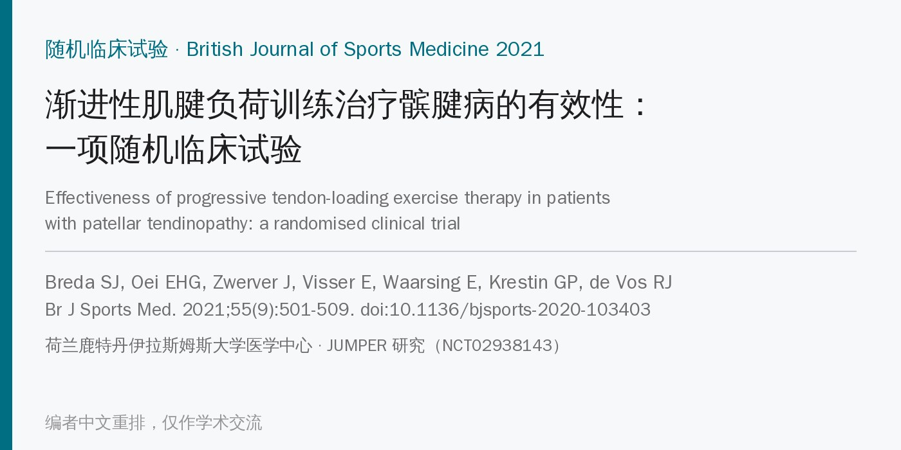
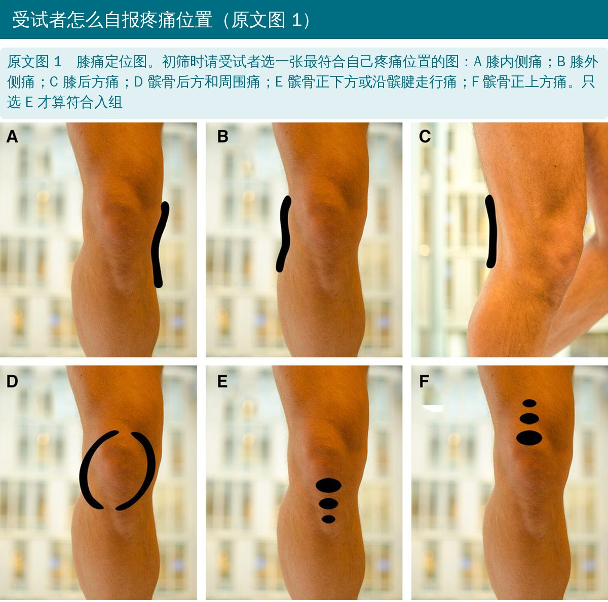
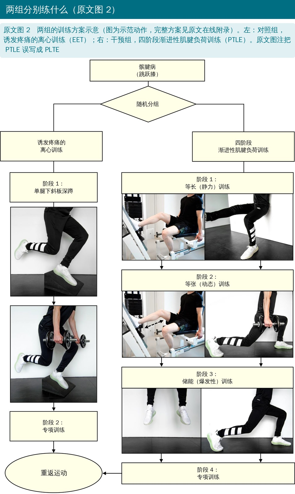
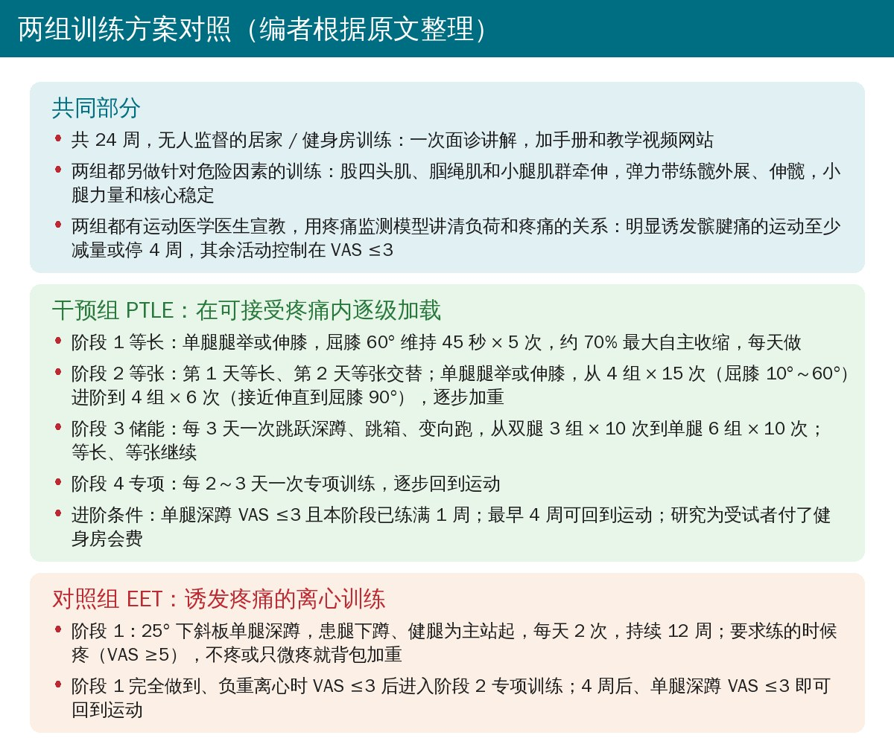
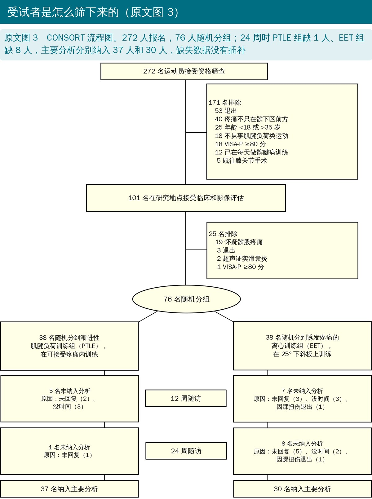
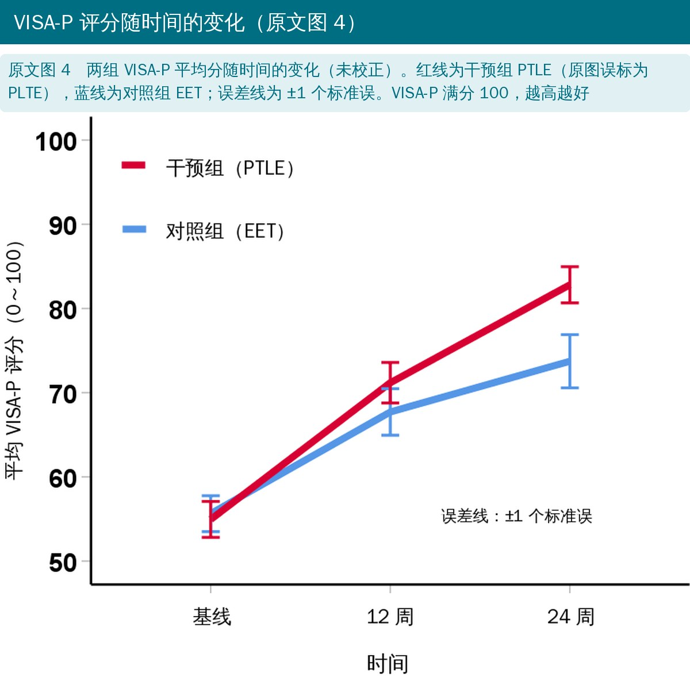
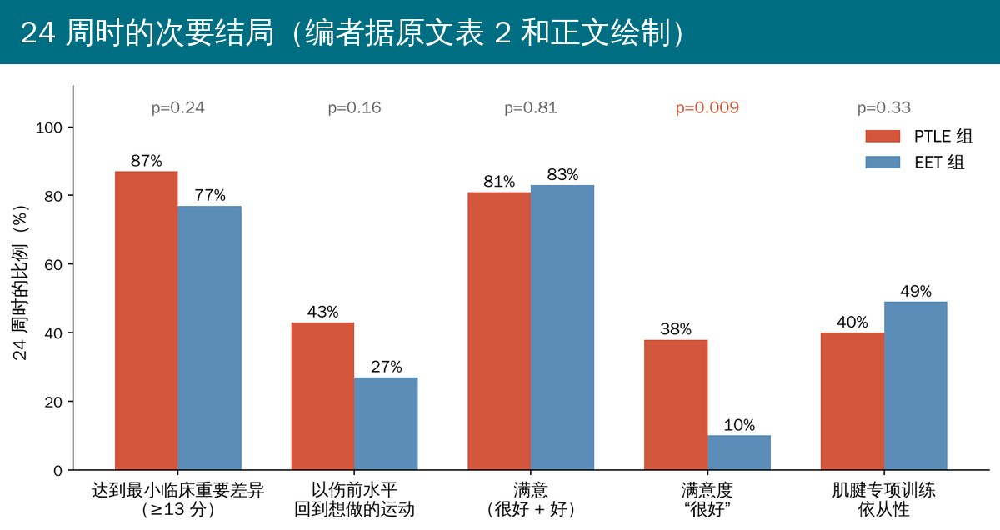
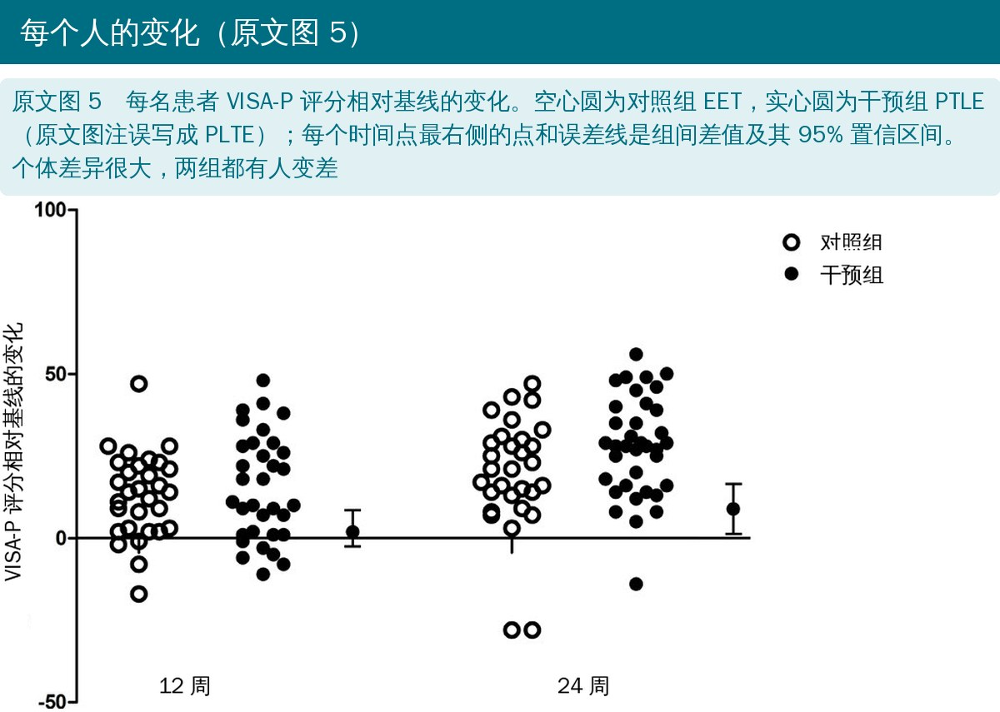
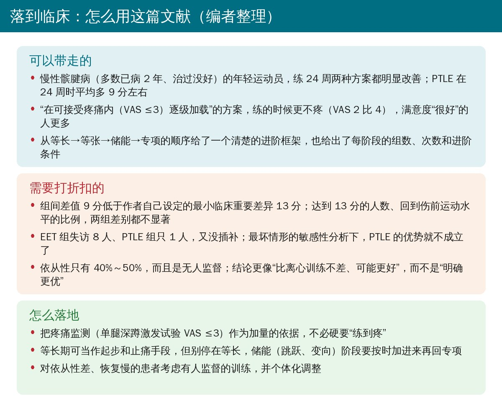

🔖原文信息（编者中文重排）
📚 文献信息
▪ Breda SJ, Oei EHG, Zwerver J, Visser E, Waarsing E, Krestin GP, de Vos RJ. Effectiveness of progressive tendon-loading exercise therapy in patients with patellar tendinopathy: a randomised clinical trial. Br J Sports Med. 2021;55(9):501-509. doi:10.1136/bjsports-2020-103403
▪ 中文题目：渐进性肌腱负荷训练治疗髌腱病的有效性：一项随机临床试验
▪ 作者来自荷兰鹿特丹伊拉斯姆斯大学医学中心等，通讯作者 Robert-Jan de Vos；JUMPER 研究，注册号 NCT02938143
▪ 研究类型：分层、研究者盲法、区组随机对照试验；美国职业篮球联赛（NBA）与 GE 医疗骨科运动医学合作项目资助，超声设备由 GE 提供
• 髌腱病（俗称“跳跃膝”）是常见的慢性肌腱损伤，表现为与负荷相关的髌骨下极疼痛，篮球、排球等跳跃项目尤其多见，常常拖很久、反复发作
• 训练是保守治疗的主力，过去最常用、也被部分指南（如英国 NICE）推荐的是下斜板离心训练（EET），但要求“练到疼”，运动员赛季中很难坚持，效果也不稳定
• 近年提出的渐进性肌腱负荷训练（PTLE）按等长→等张→储能→专项逐级加载，强调在可接受疼痛内练，但此前缺少和离心训练直接比较的大样本随机试验
• 本研究就是要回答：PTLE 是否比 EET 更好

🔖原文图 1（照片内只有分图字母，图注由编者翻译）
• 受试者：18～35 岁、从事肌腱负荷类运动的运动员，VISA-P 评分 <80 分（满分 100，越高越好），疼痛只在髌下区，经临床检查和超声确诊；排除髌股疼痛、滑囊炎、既往膝关节手术、已在每天做髌腱病训练者
• 分组：电脑区组随机（区组 4～10），1∶1 分到 PTLE 组或 EET 组，各 38 人；按早期（症状 ≤6 周）和长期髌腱病分层
• 盲法：患者无法设盲；主要研究者对分组设盲，患者有疑问时找另一位“独立”运动医学医生
• 训练：两组都练 24 周、无人监督，一次面诊讲解加手册和教学视频；具体方案见下图
• 结局：主要结局为 VISA-P 评分（基线、12 周、24 周）；次要结局为回到运动的情况、主观满意度、训练依从性，另记录训练时的疼痛等
• 统计：按意向性分析原则，用广义估计方程，校正年龄、性别、BMI、病程和辛辛那提运动活动量表；样本量按能检出 13 分的最小临床重要差异计算（把握度 0.80），缺失数据不插补，只做事后敏感性分析

🔖原文图 2（框内英文已换成中文）

🔖编者根据原文整理
• 2017 年 1 月至 2019 年 7 月共 272 人报名，76 人随机分组
• 平均年龄 24 岁，76% 为男性；病程中位数约 2 年，82% 之前治过没好，42% 双侧；只有 1 人属于“早期髌腱病”分层
• 24 周时 PTLE 组缺 1 人、EET 组缺 8 人，主要分析分别纳入 37 人和 30 人
• 基线时 PTLE 组病程更长（中位 119 周 vs 78 周），超声上髌骨骨质侵蚀更多（45% vs 18%）

🔖原文图 3（框内英文已换成中文）
• 12 周：两组校正后均分 72.1 vs 70.7，差值 1.4 分（95% CI -5.5～8.3），无差别
• 24 周：84.0 vs 75.2，差值 8.7 分（95% CI 1.2～16.2），p=0.023；相对基线分别提高约 28 分和 18 分
• 达到 13 分最小临床重要差异的比例：12 周 49% vs 55%（p=0.40），24 周 87% vs 77%（p=0.24），都没有差别
• 除“最坏情形”外，几种缺失数据敏感性分析结论一致；在最坏情形下 PTLE 的优势不再成立

🔖原文图 4（图内英文已换成中文）
• 以伤前水平回到想做的运动：12 周 21% vs 7%（p=0.13），24 周 43% vs 27%（p=0.16）
• 满意（很好 + 好）：12 周 79% vs 63%，24 周 81% vs 83%，都无差别；但“很好”的比例 38% vs 10%（p=0.009）
• 肌腱专项训练依从性：24 周 40% vs 49%（p=0.33），两组都不到一半
• 24 周时做专项训练的疼痛 VAS：2 vs 4（差值 2，95% CI 1～3，p=0.006）
• 没有严重不良事件；2 人在运动中踝扭伤

🔖编者据原文表 2 和正文绘制

🔖原文图 5（图内英文已换成中文）
• 作者认为 24 周时 PTLE 临床结局更好，“优于 EET”，推荐把 PTLE（加危险因素训练、负荷管理和宣教）作为髌腱病的首选保守治疗
• 两组差别主要出现在后 12 周，作者推测储能（爆发性）负荷阶段在回到专项训练前很重要；等长训练“立即止痛”的说法近年高质量研究并未证实
• 作者也承认：24 周时不到一半的人以伤前水平回到运动，满意度不算高，无人监督的方案还有改进空间，可考虑由运动康复治疗师指导
• 设计不错：这是迄今样本最大的髌腱病训练随机试验，超声确诊、集中随机、分配隐藏、主要研究者设盲、预先注册
• 效应量不够大：24 周差值 8.7 分，95% CI 下限 1.2 分，点估计低于作者自己设定的 13 分最小临床重要差异；达到 13 分的人数两组也没有差别。“显著”不等于“临床上明显更好”
• 失访不均衡、没插补：EET 组失访 8/38（21%），PTLE 组 1/38；作者自己说缺失可能“非随机”，最坏情形下结论就不成立，作者以“不太可能”带过
• 结局靠自评、患者不盲：VISA-P、回到运动和满意度都是自报；PTLE 组的健身房会费由研究报销、练的时候更不疼，期望效应和关注度可能不同
• 次要结局多重比较：唯一显著的“很好”满意度是四分类里拆出来的一档，事先定的二分类（满意 / 不满意）并无差别，应视为探索性
• 人群偏窄：18～35 岁、多为长病程、多数治过的运动员，几乎没有早期髌腱病；依从性只有四到五成，结果是“无人监督、依从一般”情况下的效果
• 利益相关：研究由 NBA 和 GE 医疗资助，超声设备由 GE 提供；对训练结局影响不大，但值得知道
• 摘要和正文的 p 值不一致：摘要写满意度 81% vs 83%“p=0.54”，正文和表 2 都是 p=0.81（0.54 其实是 12 周依从性的 p 值）；摘要写 24 周回到运动“p=0.13”，正文和表 2 的 0.13 是 12 周，24 周是 p=0.16
• 满意度人数对不上：表 2 中 PTLE 组“好”16 人 + “很好”13 人 = 29 人，正文却说 24 周满意 30 人（81%）；四档合计 36 人，与主要分析的 37 人不符；“很好”13 人标为 38%，按 37 人算应为 35%
• 分母不统一：表 2 表头写 n=38，但回到运动和满意度的百分比实际以完成者（37 人、30 人）为分母；表 1 单侧“左 / 右”的百分比又是按单侧亚组算的
• “独立”与统计分工：方法说 JZ 是供患者咨询的“独立第二位运动医学医生”，又说分析由主要研究者 SJB 在统计师 JZ 指导下完成；作者贡献里却写统计分析由 JZ 负责；讨论中又称对统计师设了盲
• 笔误：图 2、图 4、图 5 的图注或图例把 PTLE 写成 PLTE
• 结论措辞：摘要直接写“PTLE 优于 EET”，与 12 周无差别、最小临床重要差异和回到运动无差别、最坏情形敏感性分析不支持等情况相比，说得偏满

🔖编者整理
• 不必“练到疼”：在可接受疼痛内（VAS ≤3）逐级加载，至少不比痛性离心训练差，练的时候更舒服，更容易坚持
• 别停在等长：差距出现在后半程，储能（跳跃、变向）阶段要按标准加进去，再回专项
• 设定合理预期：长病程髌腱病练半年，平均能提高 20～30 分，但只有三到四成能以伤前水平回到运动，个体差异很大
• 提高依从性：无人监督时依从性不到一半，对恢复慢的患者，有人指导、定期复评可能比换方案更重要（编者观点）
原文表 2 12 周和 24 周的主要结局
| 指标 | PTLE 组 | EET 组 | 组间差值 |
|---|---|---|---|
| VISA-P 校正均值（95% CI），12 周 | 72.1（67.0～77.2） | 70.7（65.0～76.3） | 1.4（-5.5～8.3） |
| VISA-P 校正均值（95% CI），24 周 | 84.0（79.3～88.6） | 75.2（69.0～81.5） | 8.7（1.2～16.2） |
| VISA-P 未校正均值 ± SD，基线 | 55.0 ± 13.1 | 55.6 ± 13.2 | -0.6 |
| VISA-P 未校正均值 ± SD，12 周 | 71.2 ± 13.8 | 67.7 ± 15.4 | 3.5 |
| VISA-P 未校正均值 ± SD，24 周 | 82.8 ± 13.1 | 73.7 ± 17.3 | 9.1 |
| 未回到运动，n（%） | 2（6） | 3（10） | |
| 回到运动，但不是想做的项目 | 6（16） | 3（10） | |
| 回到想做的项目，未达伤前水平 | 13（35） | 16（53） | |
| 以伤前水平回到想做的项目 | 16（43） | 8（27） | p=0.16 |
| 满意度：差 | 1（3） | 1（3） | |
| 满意度：一般 | 6（16） | 4（13） | |
| 满意度：好 | 16（43） | 22（73） | |
| 满意度：很好 | 13（38） | 3（10） | 满意 / 不满意 p=0.81 |
| 肌腱专项训练依从性 %，0～12 周 | 47.0（32.7～61.2） | 53.1（41.3～64.8） | -6.1（-25.8～13.6） |
| 肌腱专项训练依从性 %，0～24 周 | 40.2（29.2～51.1） | 48.6（36.2～60.9） | -8.4（-25.1～8.3） |
| 危险因素训练依从性 %，0～12 周 | 27.5（19.4～35.6） | 28.2（17.8～38.5） | -0.7（-13.1～11.7） |
| 危险因素训练依从性 %，0～24 周 | 21.4（12.2～30.5） | 21.6（10.1～33.2） | -0.3（-14.3～13.7） |
表头两组均标 n=38；校正值用广义估计方程，校正年龄、性别、BMI、病程和辛辛那提运动活动量表，正值有利于 PTLE。回到运动和满意度为 24 周数据，数字照录原文
原文表 1（节选） 基线特征
| 特征 | PTLE 组（n=38） | EET 组（n=38） |
|---|---|---|
| 年龄，均值（SD），岁 | 24（3.5） | 24（4.2） |
| 男性，n（%） | 31（82） | 27（71） |
| BMI，均值（SD） | 23.8（2.5） | 24.1（3.2） |
| 病程，中位数（IQR），周 | 119（64～273） | 78（40～169） |
| VISA-P，均值（SD） | 55（13.1） | 56（13.2） |
| 研究开始时已停止想做的运动，n（%） | 14（37） | 14（37） |
| 双侧，n（%） | 19（50） | 13（34） |
| 既往做过物理治疗，n（%） | 28（74） | 28（74） |
| 既往做过离心训练，n（%） | 6（16） | 5（13） |
| 超声髌腱厚度，mm | 8.2 ± 2.7 | 8.6 ± 2.0 |
| 腱内多普勒血流，n（%） | 33（87） | 36（95） |
| 髌骨骨质侵蚀，n（%） | 17（45） | 7（18） |
欢迎关注骨科康复小黄公众号，获取更多物理治疗的专业知识！
📄参考文献：
Breda SJ, Oei EHG, Zwerver J, Visser E, Waarsing E, Krestin GP, de Vos RJ. Effectiveness of progressive tendon-loading exercise therapy in patients with patellar tendinopathy: a randomised clinical trial. Br J Sports Med. 2021;55(9):501-509. doi:10.1136/bjsports-2020-103403
本文为中文解读，仅作学术交流：原文图 1～图 5 引自原文，其中图 2～图 5 的英文由编者替换为中文；训练方案对照、次要结局图和临床卡为编者根据原文整理。原文以 CC BY-NC 4.0 许可发表，版权归作者所有。